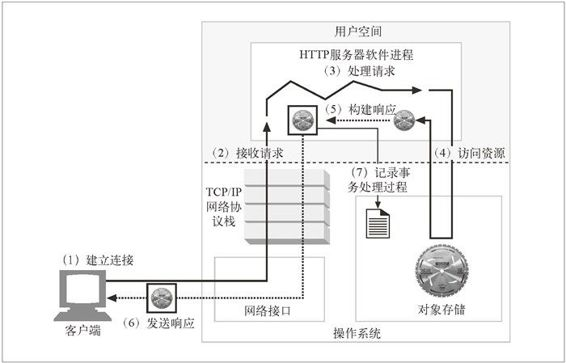

5.3 实际的 Web 服务器会做些什么
例 5-1 显示的 Perl 服务器是一个 Web 服务器的小例子。最先进的商用 Web 服务器要比它复杂得多，但它们确实执行了几项同样的任务，如图 5-3 所示。

图 5-3 基本 Web 服务器请求的步骤
建立连接——接受一个客户端连接，或者如果不希望与这个客户端建立连接，就将其关闭。
接收请求——从网络中读取一条 HTTP 请求报文。
处理请求——对请求报文进行解释，并采取行动。
访问资源——访问报文中指定的资源。
构建响应——创建带有正确首部的 HTTP 响应报文。
发送响应——将响应回送给客户端。
记录事务处理过程——将与已完成事务有关的内容记录在一个日志文件中。
接下来的 7 个小节重点说明了 Web 服务器是怎样实现这些基本任务的。